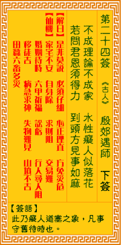

观音灵签第二十四签 【殷郊遇师】 |
 | |||
不成邻里不成家 水泡痴人似落花 若问君恩难得力 到头毕竟事如麻 |
||||
| 【吉凶】 | 下下签 | 【宫位】 | 巳宫 | |
| 【签语】 | 此卦痴人道塞之象，凡事守旧待时也。 | |||
| 【解曰】 | 是非莫说 必须仔细 心正理直 方免灾危 | |||
| 【仙机】 | 此签家宅不安，自身险，求财阻，交易难，婚姻待时，田蚕六畜多灾，六甲祈福，行人寻人阻，讼亏，移徙吉，病急急求神，失物难见， 山坟不吉。 | |||
| 【详解】 | 时运未至如何可以成邻成家，执迷不悟的痴人就似花落无情;孤芳自赏恐怕得不到别人的帮助，到头来仍是事情纷杂困难重重。 是非莫说，事须仔细，正理存心，不伤于己。此签痴人丧德之象，凡事守旧待时。 本签即是痴人丧德之象。凡事守旧待时。君汝目下即是水泡痴人似落花之命也。事事应顺天理。方平安。眼中无人之时。将何。必有福祸来临。不可不慎。亦即是到头毕竟如麻者。爰之。凡事求神作福。祷告。 此签有”执迷不悟”之意。奉劝当事人，须知忠言必逆耳。看事情的角度不能光凭表面，必须多用点心，观察入微、从里到外，仔细分析评估求证。不要先入为主就认定一件事必定是如此。须知事事无绝对，很多事都有意外。对于他人的善意提醒与规劝，尤其在亲朋好友方面，应思考必定有其道理，要能谦虚接受、谨记在心。切勿亳不在乎地当成耳边风，免得吃亏在眼前，后悔莫及。 | |||
| 【典故】 | 殷效和殷洪两兄弟都是商朝纣王的儿子。殷效被广成子收为徒弟，学习仙法，又变得三头六臂。下山时，在师傅面前发誓，要助周文王， 但走到半路被申公豹说反，欲去助作恶的父亲纣王。广成子下山劝说，师徒反脸，大战一番。后来姜子牙取得杏黄旗，在燃灯道人协助下，打败殷效，将他夹在二山之中，头露山 外，广成子用犁锄犁掉他的头，以应其誓。《封神榜》故事 | |||